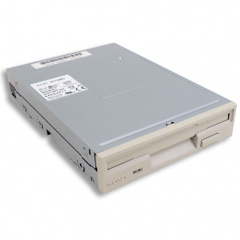

Una unidad de disquete o disquetera se utiliza para leer y escribir datos en disquetes.
Pueden ser internas, que están integradas en una carcasa de ordenador, y externas, que tienen su propia carcasa y estan conectadas
al ordenador a traves de un cable. El disco de datos correspondiente se llama disquete (FD del inglés Floppy Disk). Este es un soporte
magnético de almacenamiento de datos con la forma de un disco flexible de plástico recubierto de metal que se encuentra en un estuche de
proteccion.